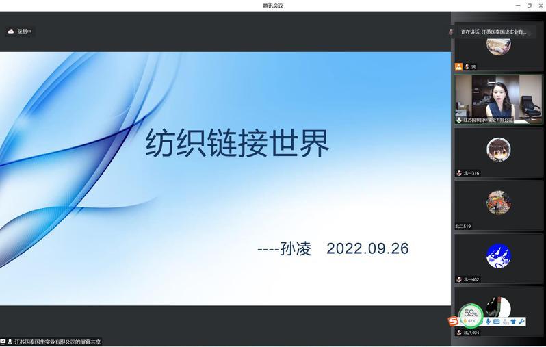

新生入学教育是本科生培养的重要内容，旨在引导广大新生开好头、起好步，坚定理想信念，以饱满的精神、奋进的姿态投入新学期的学习生活。纺织与服装工程学院（紫卿书院）于9月26日至9月28日开展“2022级新生入学教育之校外导师谈专业”系列活动，共邀请五位杰出校友、行业精英参与分享，为新生们献上了干货满满的开学礼物。
江苏国泰国华集团总经理、苏州大学服装设计与工程2006届校友孙凌作了题为“纺织链接世界”的讲座，她结合自身工作经历向同学们介绍了目前纺织服装行业的生产、贸易现状，以及行业未来的发展趋势。孙凌指出纺织服装作为人们日常生活的大众消费品，正以“绿色、可持续”的发展理念，在缤纷多彩的数字化平台上，联通着世界的每个角落。

苏州大学纺织与服装工程学院校外导师、客座教授、教师江辉以“茕茕登峰，衣山漫路”为主题，详细介绍了服装行业的发展之路，他将“坚持”定位为服装人的特质，就像波司登一样，坚持做最好的羽绒服。通过分享“登峰造极”冲锋衣研发案例，激发同学们科技强国、科技报国的激情与动力。
吴江市飘逸纺织有限公司创始人、苏州唯逸纺织科技有限公司创始人、苏州风谜网络科技有限公司创始人、纺织无边界合作联盟创始人、国家高级面料设计师，校友周娟从自身经历出发，向同学们讲述了如何打破行业与企业边界，融合科技与时尚，最终实现“纺织无边界”的行业共生生态链。以“科技创造更美好的穿着体验”的理念打破了同学们对纺织服装行业的传统刻板印象。
吴江聚杰微纤染整有限公司总经理、苏州大学轻化工程2003届校友谢琳以“一切都是最好的安排”为题，向轻化工程专业的新生分享了自己近20年的工作经历以及心路历程，他以自身经历鼓励同学们调整心态，化被动为主动，努力学习专业知识，成为行业智能化发展道路中的新型复合型人才。
江苏丽洋新材料股份有限公司董事长兼总经理高级工程师、中国高等学校非织造材料与工程教学指导分委员会委员尤祥银以诗歌开场，引出纺织的历史与文化，他指出纺织是“柔美与力量的交织”，从古代男耕女织的生活到现代各类高性能新型纺织品，纺织行业依旧散发着无限的魅力。
本次系列讲座为学院新生提供了和企业、行业专家近距离交流的宝贵机会，解答了他们对于专业、行业的困惑，讲座内容丰富多彩，从专业认知及职业规划都给予了新生莫大的帮助。同学纷纷表示受益匪浅、收获颇多，深刻认识到了纺织行业的魅力，在今后的专业学习中也一定会牢记校外导师们的谆谆教导，不负韶华逐梦行，共启锦绣新篇章、开启美好新征程。